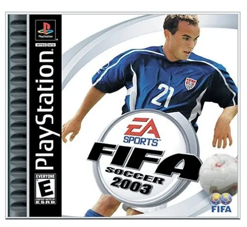

💡 Para jogar em tela cheia, clique no ícone de configurações "↓" no centro do emulador e então "Enter Full Screen"

FIFA Soccer 2003
PlayStation 1
Desenvolvedora: EA Canada
Editora: EA Sports
Lançamento: 2002
Gênero: Esporte / Futebol
Modos de Jogo: Single-player, Multiplayer (1-8 com Multitap)
Um divisor de águas na franquia. Conhecido pela capa lendária com o "Trio de Ferro" (Edgar Davids, Ryan Giggs e Roberto Carlos), este jogo tentou afastar a série do estilo puramente arcade para uma simulação mais cadenciada. Foi um dos últimos grandes esforços da EA para o PS1, trazendo uma trilha sonora inesquecível e licenças oficiais que deixavam a concorrência para trás.
📜 O "Enredo" (Temporada)
O foco aqui é o Club Championship. Pela primeira vez, o jogo focou intensamente na atmosfera dos clubes europeus de elite, permitindo que você enfrentasse os melhores times do continente em estádios reais com cânticos de torcida autênticos, tentando levar seu time ao topo da glória europeia.
🎮 Destaques e Jogabilidade
- Freestyle Control: A grande novidade de marketing. O uso do analógico direito permitia tocar a bola para frente, fazer dribles curtos e proteger a posse com o corpo, dando uma nova camada de controle sobre a bola.
- Bolas Paradas: O sistema de faltas e escanteios foi totalmente refeito. Saiu a seta simples e entrou um medidor de precisão e curva (o ícone da bola com o ponto de impacto), permitindo fazer aquelas curvas impossíveis estilo Roberto Carlos.
- EA Trax: A introdução oficial do selo musical da EA. Quem jogou, jamais esquece de abrir o menu ouvindo "Complicated" da Avril Lavigne ou "Dey Know".
✨ Fator Replay
Com mais de 10.000 jogadores reais e centenas de times licenciados (incluindo ligas que o concorrente Winning Eleven não tinha), o fator replay estava em gerenciar seu time por múltiplas temporadas e dominar a nova mecânica de chutes livres, que exigia perícia real para acertar o ângulo.
Como Salvar
Para salvar seu progresso neste jogo, você pode salvar o arquivo .save usando as opções do emulador que está utilizando. Isso pode ser feito através do ícone 💾 no menu no canto inferior esquerdo da tela. Isso criará um arquivo de salvamento que você poderá carregar 📂 posteriormente para continuar de onde parou.